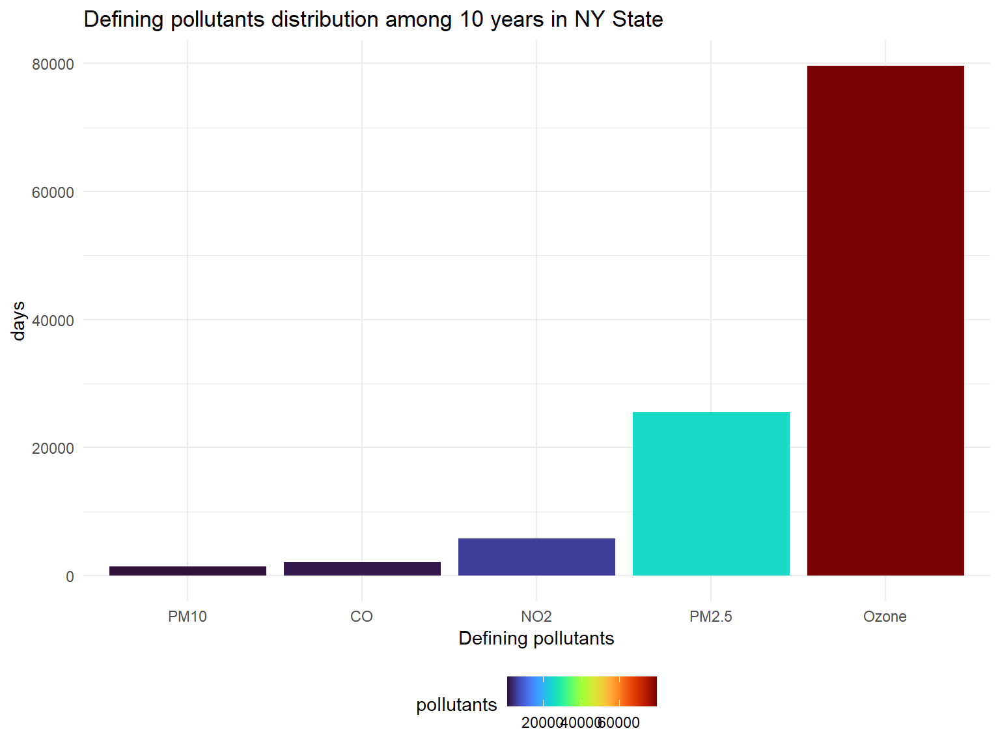
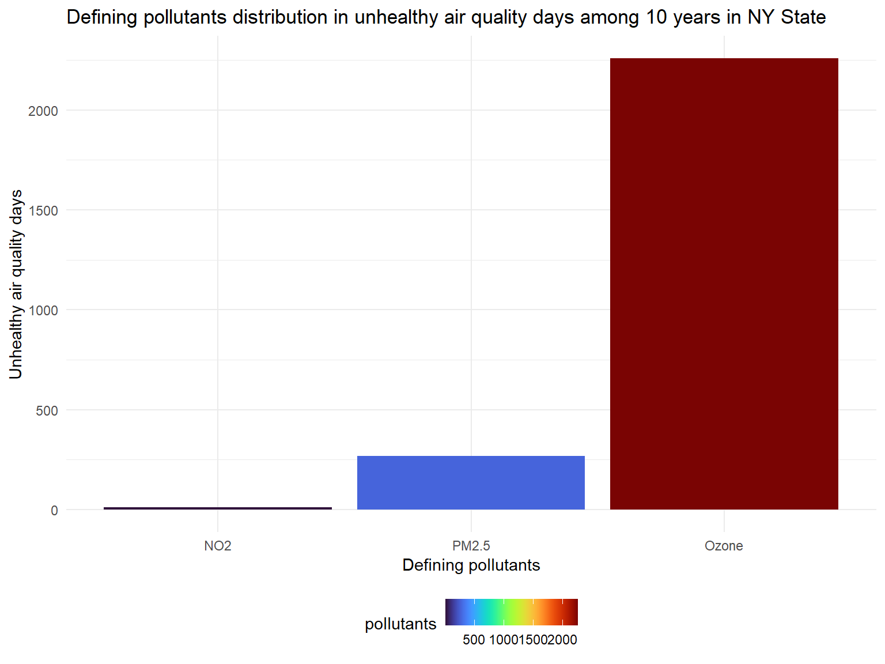
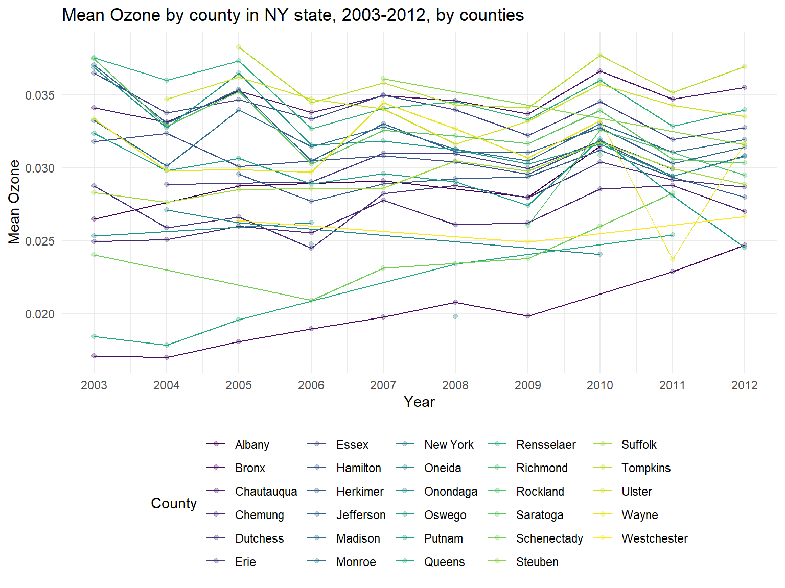
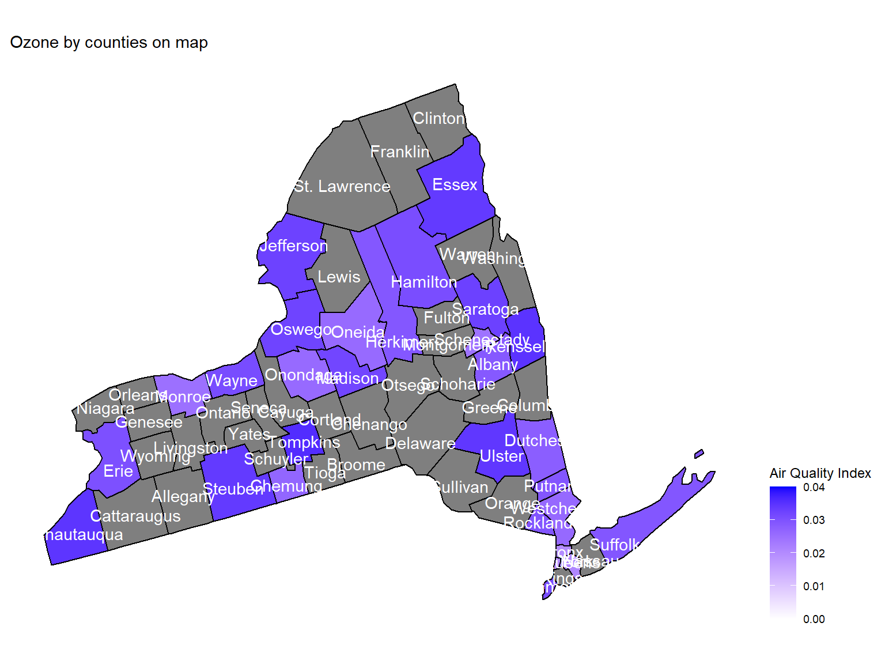
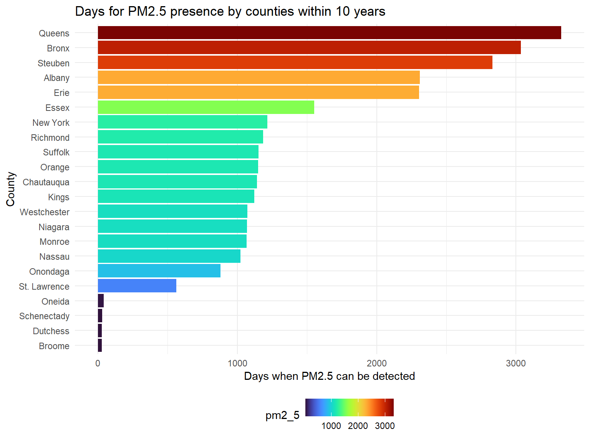
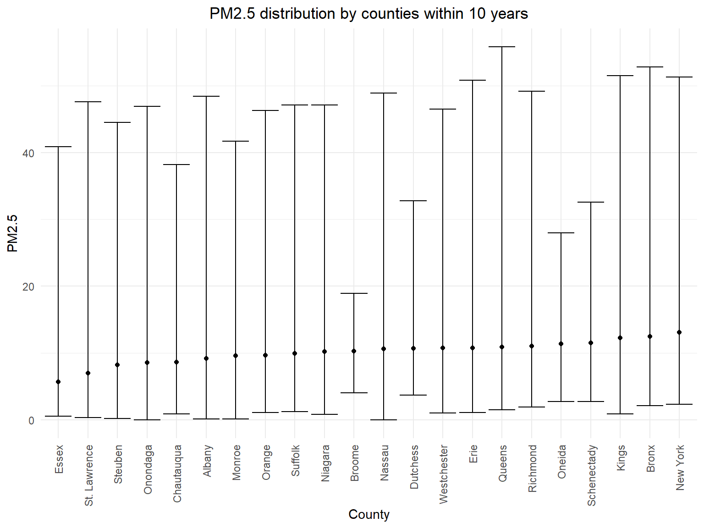

pollutants_graph =
air_quality_day_df %>%
group_by(defining_parameter) %>%
summarize(
pollutants = n()
) %>%
mutate(
defining_parameter = fct_reorder(defining_parameter, pollutants)
) %>%
ggplot(aes(x = defining_parameter, y = pollutants, fill = pollutants)) +
geom_col() +
labs(
title = "Defining pollutants distribution among 10 years in NY State",
x = "Defining pollutants",
y = "days"
) +
scale_fill_viridis(option = "turbo")
pollutants_graph
Ozone. Based on the graph, we
can know that except for Ozone, PM2.5 and
NO2 are pollutants that affect NY state in past 10
years.Unhealthy_pollutants_graph =
air_quality_day_df %>%
filter(aqi_status == "Unhealthy") %>%
group_by(defining_parameter) %>%
summarize(
pollutants = n()
) %>%
mutate(
defining_parameter = fct_reorder(defining_parameter, pollutants)
) %>%
ggplot(aes(x = defining_parameter, y = pollutants, fill = pollutants)) +
geom_col() +
labs(
title = "Defining pollutants distribution in unhealthy air quality days among 10 years in NY State",
x = "Defining pollutants",
y = "Unhealthy air quality days"
) +
scale_fill_viridis(option = "turbo")
Unhealthy_pollutants_graph
Ozoneand
PM2.5 are main defining pollutants during unhealthy air
days.ozone_year_df =
air_daily_df %>%
select(state_code, county_code, state, county, year, mean_ozone) %>%
group_by(state_code, county_code,county,year) %>%
summarize(
ozone_mean = mean(mean_ozone)
) %>%
drop_na(ozone_mean)
ozone_graph =
ozone_year_df %>%
group_by(county) %>%
ggplot(aes(x = year, y = ozone_mean, color = county)) +
geom_point(alpha=.3) +
geom_line() +
labs(
title = "Mean Ozone by county in NY state, 2003-2012, by counties",
x = "Year",
y = "Mean Ozone"
)+
scale_x_continuous(breaks = 2003:2012 )+
scale_color_viridis(
name = "County",
discrete = TRUE
)
ozone_graph
ozone is increasing, air quality is
worse. Based on the graph, it can be sen that ozone
Concentration is increasing among 10 years.ozone concentration among 10 years, such as
New York, Bronx and Queens.
However, some counties are with higher ozone concentration,
for example, Tompkins, Rensselaer and
Chautauqua.ozone_county_df =
ozone_year_df %>%
group_by(state_code, county_code,county) %>%
summarize(
ozone_all = mean(ozone_mean),
max = max(ozone_mean),
min = min(ozone_mean)
) %>%
mutate(
fips = str_c(state_code,county_code)
)
ozone_county_plot_map =
plot_usmap(regions = "county", include = c("NY"), data = ozone_county_df, values = "ozone_all", labels = TRUE, label_color = "white") +
scale_fill_continuous(
low = "white", high = "Blue", name = "Air Quality Index", label = scales::comma, limits = c(0,0.04)
) +
labs(
title = "Ozone by counties on map"
)+
theme(legend.position = "right")
ozone_county_plot_map
ozone concentration
in counties. This map is based on mean ozone concentration among 10
years. According to the map, we can see that Essex,
Ulster and Chautauqua are with the highest
ozone concentration among 10 years.pm2_5_county_df =
air_daily_df %>%
select(state_code, county_code, state, county, year, mean_pm2_5) %>%
drop_na(mean_pm2_5) %>%
group_by(state_code, county_code,county) %>%
summarize(
pm2_5 = n(),
pm2_5_all = mean(mean_pm2_5),
max = max(mean_pm2_5),
min = min(mean_pm2_5)
) %>%
ungroup() %>%
arrange(pm2_5) %>%
mutate(
county = fct_reorder(county, pm2_5)
)
pm2_5_county_graph =
ggplot(pm2_5_county_df, aes(y = county, x = pm2_5, fill = pm2_5)) +
geom_col() +
labs(
title = "Days for PM2.5 presence by counties within 10 years",
x = "Days when PM2.5 can be detected",
y = "County"
) +
scale_fill_viridis(option = "turbo")
pm2_5_county_graph
PM2.5 is a harmful pollutant that will affect human
health. According to the result, Queens,
Bronx, Steuben, Albany and
Erie are counties with most PM2.5, while
St. Lawrence, Oneida,
Schenectady, Dutchess and Broome
are hard to detect PM2.5.pm2_5_range_df =
pm2_5_county_df %>%
mutate(
county = fct_reorder(county, pm2_5_all)
)
pm2_5_county_range_graph =
pm2_5_range_df %>%
group_by(county) %>%
ggplot(aes(x = county, y = pm2_5_all)) +
geom_point()+
geom_errorbar(mapping = aes(ymin = min, ymax = max)) +
labs( x = "County", y = "PM2.5", title = "PM2.5 distribution by counties within 10 years") +
theme(plot.title = element_text(hjust = 0.5)) +
theme(axis.text.x = element_text(angle = 90, vjust = 0.5, hjust = 1))
pm2_5_county_range_graph
Queens is the county with the highest PM2.5
observation.